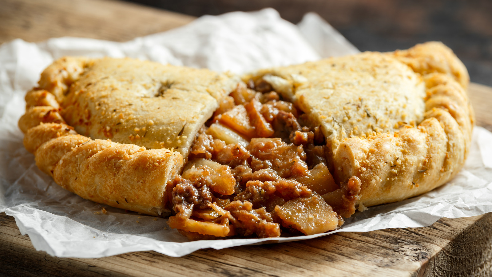
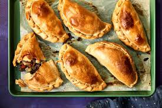

Pasties

Pasties are delicious bakery goods! They are usually savory and filling. Most pasties can even double as a complete meal. They are usually stuffed with meat of all sorts. Some Pasties, however, are only stuffed with vegetables. Either way, they are very enjoyable. Take them to a picnic or gathering! You'll be glad you did!
History of Pasties

The history of Pasties is quite interesting! While they can be found in the US, pasties originated from England! They date back to the 13th century. They were portable and durable because of their construction. Many laborers and miners ate pasties during their work. They were able to hold the thick crust edges of the pasty while they ate the contents inside of it. Pasties were a worker's dream lunch!